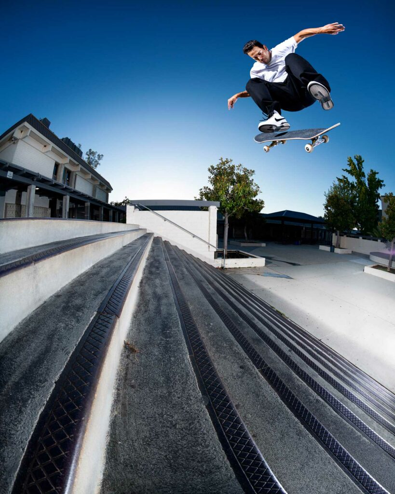

Tiago Lemos
Tiago Lemos, skatista brasileiro nascido em Lisboa, Portugal, cresceu na cidade de Jaguariúna, no interior de São Paulo, onde começou a praticar skate ainda jovem.
Leia mais

Paul Rodriguez (Prod)
Paul Martin Rodriguez Jr. (nascido em 31 de dezembro de 1984) é um skatista profissional de rua e ator americano.
Leia mais
Felipe Gustavo
Felipe Gustavo é um filho de Brasília, é lá onde se sente em casa, onde as pessoas conhecem sua história. Criado no Setor Bancário, pico cheio de chão liso e bancos extensos, ele teve acesso ao que há de melhor pra quem ama o skate raiz.
Leia mais
Rayssa Leal
Jhulia Rayssa Mendes Leal (Imperatriz, 4 de janeiro de 2008) é uma skatista brasileira, vice-campeã olímpica nos Jogos Olímpicos de Verão de 2020 em Tóquio, sendo a mais jovem medalhista olímpica brasileira.
Leia mais